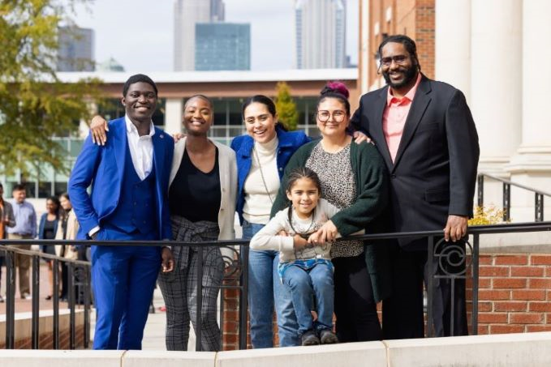

Stem Tank Season 4 at Central Piedmont (I’m in the green with
my son, Clark). We won 2nd place.
Personal background: I’m a North Carolina native. Grew up
in a small town called Rocky Mount. I’m a mom to a 9 year old boy, Clark and a
grandmother to my son’s dog, Lucy.
Professional Background: I’ve worked in retail, fast food, call
centers, warehouses, you name it. I’m currently employed at Central Piedmont through
Work Study. I’m an office assistant at the Financial Services Institute. I also do a
lot of side hustles like content management for a couple of small businesses, professional
organizer, manage a couple of websites through Shopify and Wix, and many other things.
Academic Background: Currently pursuing a degree in Software
Development. I can say that my first academic introduction to anything IT related was through
Coursera. I also participate in a group called Dream the Code. It is a non-profit organization
based out of Durham, NC that provides free coding education to minorities. Prior to IT, I have
some academic background from UNC Charlotte in Healthcare Management.
Background in this subject: As someone who grew up in the MySpace era, I
can say that was my first encounter with coding. Every job I’ve had, we had to use some kind of
software to manage the business, which had me on the user side of software.
Primary Computer Platform: Windows 10 & 11 for school and work. Mac Desktop
at home.
Courses I'm Taking & Why:
WEB140 - Web Development Tools: Need it to complete IT Certificate
Specialization in Front-End Development Fundamentals.
WEB115 - Web Markup and Scripting: Need it to complete IT Certificate
Specialization in JavaScript and IT Certificate Specialization in Front-End Development Fundamentals.
CSC284 - Emerging Comp Prog Tech: Need it to complete Software Development (AAS).
CSC258 - JAVA Enterprise Programs: Need it to complete Software Development (AAS).
CSC174 - Server-Side Javascript: Need it to complete Software Development (AAS).
Funny/Interesting item about yourself: I am that friend that you invite when you
want to have a great time. You want to go to a K-Pop concert in NY, let’s go. You want to go to a
networking event for entrepreneurs, I will be your plus one. You want to take a baking class, what are
we making? Call me and I’m there. But please let me know at least three weeks in advance.
I'd also like to share: As much as I like to entertain, I am very much a homebody.
I enjoy watching anime and doing puzzles.